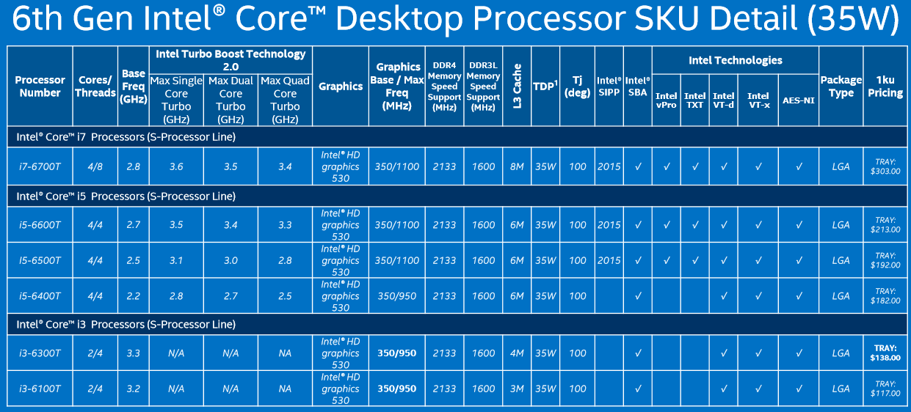

.png)
Intel
Intel Corporation (also known as Intel and stylized as intel) is an American multinational technology company headquartered in Santa Clara, California. It is one of the world's largest and highest valued semiconductor chip makers based on revenue., and is the inventor of the x86 series of microprocessors, the processors found in most personal computers (PCs). Intel supplies processors for computer system manufacturers such as Apple Inc., Lenovo, HP and Dell. Intel also manufactures motherboard chipsets, network interface controllers and integrated circuits, flash memory, graphics chips, embedded processors and other devices related to communications and computing.
Intel Core
Intel Core is Intel's brand name for various mid-range to high-end home and business microprocessors. These processors displaced the existing mid-to-high end Pentium processors of the time, moving the Pentium to the entry level, and bumping the Celeron series of processors to low end. Identical or more capable versions of Core processors are also sold as Xeon processors for the server and workstation markets. As of 2016 the current lineup of Core processors included the Intel Core i7, Intel Core i5, Intel Core i3, Intel Core m7, Intel Core m5 and Intel Core m3.
i3 Processor
Last but not least, Core i3 is somewhat of the new kid on the motherboard, introduced in 2010 as a cost-effective, dual-core option capable of between 2.4GHz and 3.7GHz. While the Core i3 may fall short in raw power, it more than makes up for that in low power consumption (between 35 and 73 watts), but generally speaking, this series will be found in budget-priced systems.
i5 Processor
The next step down is Core i5, the popular midrange processor lineup Intel first introduced in 2009. With clock speeds ranging from 1.06GHz to 3.6GHz, Core i5 chips are available in dual-core and quad-core configurations with surprisingly efficient power consumption (17 to 95 watts).
i7 Processor
At the higher end, Core i7 was actually introduced first in 2008, with clock rates of 1.6GHz at the lower end of the spectrum, currently up to as fast as 4.4GHz. The i7 category actually breaks down into two camps: Processors that consume a more modest amount of power (45 to 130 watts) with quad cores, and those intended for desktop systems (with power consumption between 130 and 150 watts) that add hexa-core and octa-core options (more on that in a moment)
What is in a number?
It's also worth noting that not all Intel Core processor brands are the same, even if they carry the i3, i5 or i7 modifier. There's also an alphanumeric code used to describe the processor model, and each one can tell prospective buyers something about what they can expect from it. For example, an Intel Core i7-4770K model number breaks down as such: The first number after the brand modifier indicates the generation (in this case, the number four equals fourth-generation), followed by a three-digit numeric stock keeping unit (SKU) that helps differentiate each for the retailer. The processor may include one or more product line suffixes. In the above example, the trailing "K" signifies an unlocked desktop model with a CPU capable of performing to peak potential, versus other letters like S or T, which are optimized for "lifestyle" performance or power, respectively. You may have heard Intel processors also referred to by their internal code names. Although you'll rarely see them marketed that way, code names like Sandy Bridge, Ivy Bridge and Haswell have become part of the tech media lexicon in recent years. The code names simply refer to a newer, higher performance version of the same processor type, rather than an entirely new CPU.
Comparison of i3 i5 and i7

{kind=link}